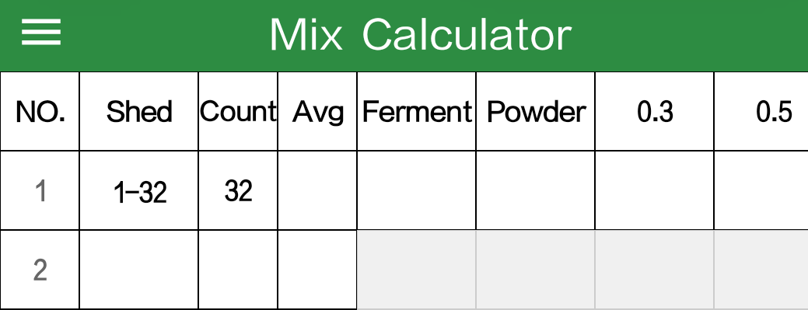
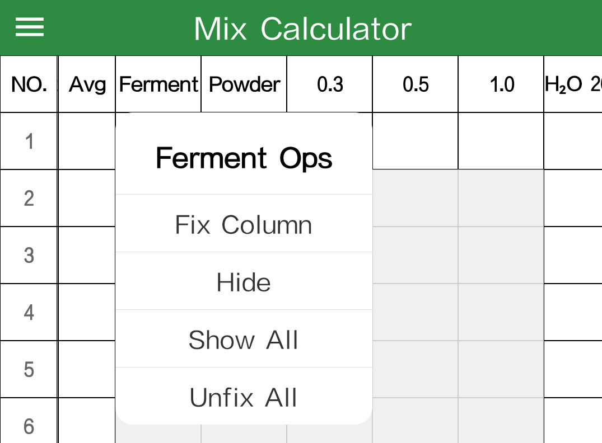
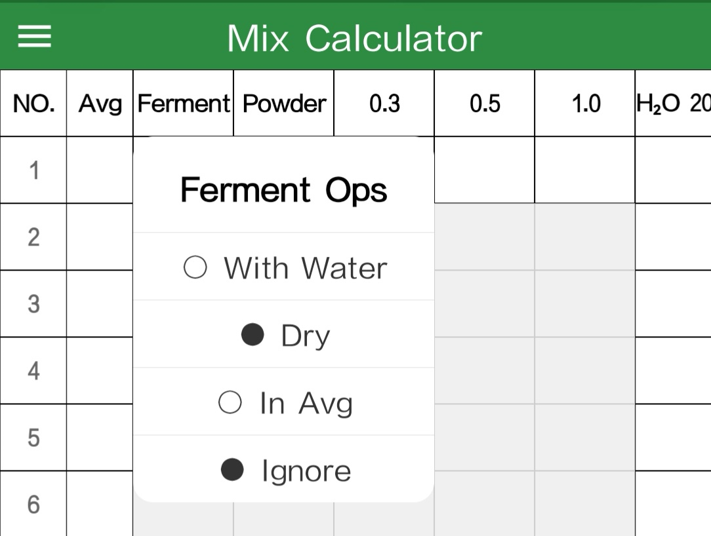
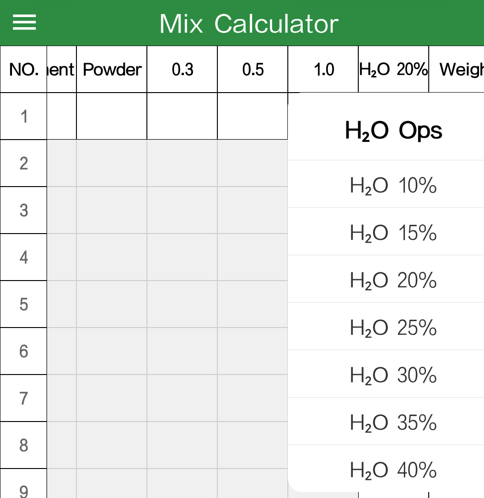
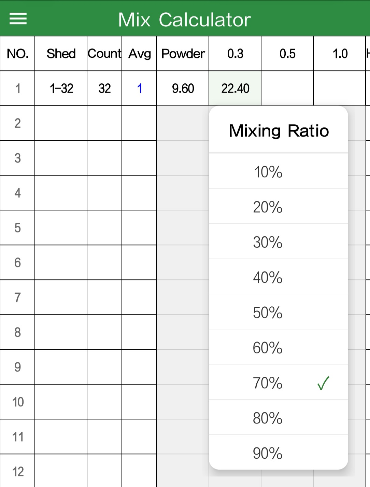
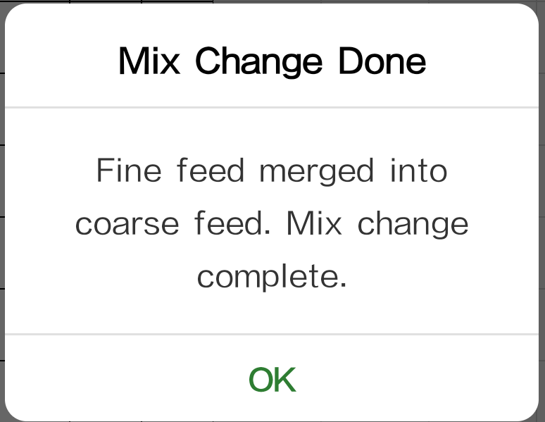

In the first row's shed-number cell, enter a range (min-max), e.g. 1-40, 1 to 40, 1~40.
Sheds with different feed amounts go on a separate row. Multiple numbers can be separated by space, comma, or enumeration comma.

Enter shed info: consecutive sheds as a range; sheds with different feed amounts on separate rows.

Column ops: long-press a header cell to fix or hide columns, adjusting the display for small phone screens.

Fermented feed setting: tap the fermented-feed header cell to choose whether that row's fermented feed counts toward water and feed.

Tap the water-percentage header cell to pick the mix moisture, choosing the water ratio per your needs.

Long-press the cell for feed-change data to set the transition ratio, used when gradually replacing feed.

After manually clearing a fine-feed cell, the system merges the fine feed into the coarse-feed cell, completing the change automatically.